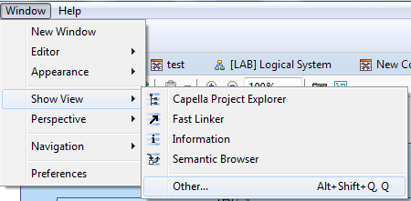
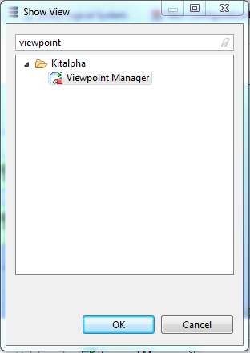
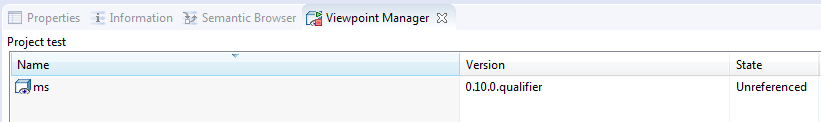
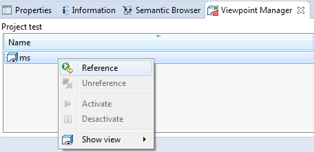

Before using the Mode & States viewpoint, it needs to be activated. In order to do so, you need to:
Open the Viewpoint Manager view by choosing Window / Show View / Other...

Type viewpoint in the search field and choose the Viewpoint Manager view

The Viewpoint Manager view opens. Select a model element in order to synchronize the view with the status of a model. By default, the viewpoint is "unreferenced"

Right click on the "ms" viewpoint and select reference

The viewpoint is now "active" and can be used